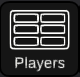
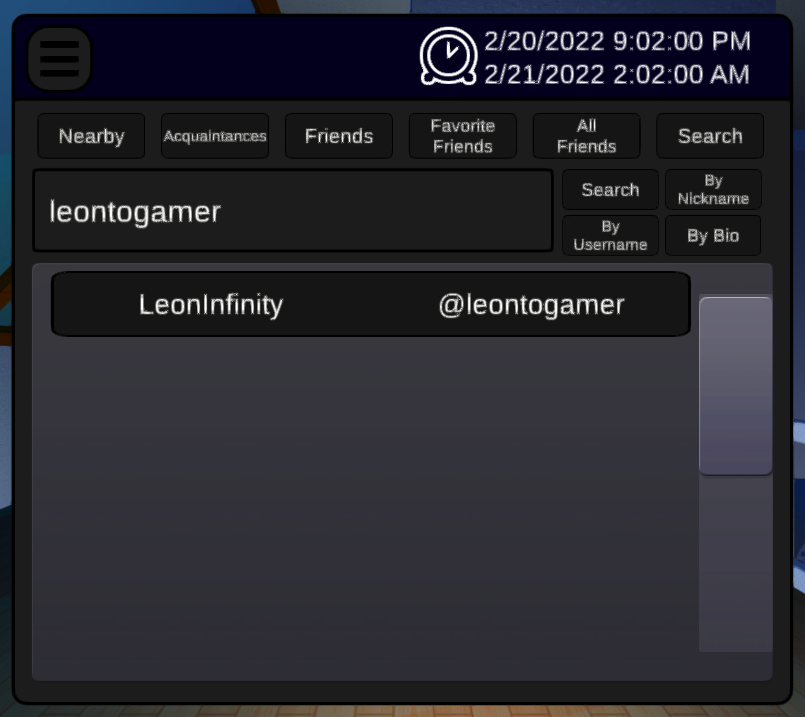
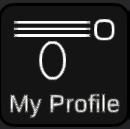
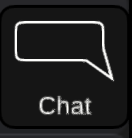

Basketball can now be found in the top menu of the home screen in your Dive Computer.
It requires at least 2 players to begin, and rounds last either 5 minutes or until either team reaches 10 points.
You can now add players as Friends, Acquaintances, or Favorite Friends by first sending them a friend request through their profile, waiting for them to accept it, then using the buttons on their profile to change their tier.
You can find a list of all your Acquaintances, Friends, and Favorite Friends (or all of them combined) in the new...
We've renamed the Nearby Players menu to just Players, where you can find nearby players, all your different friend types, and the newest addition to both the API and the game...
You can search for players in the Players Menu by switching to the "Search" tab. You can type in a query in the textbox, and search by username, nickname, or bio!
You can now click on input fields within the watch to type in them. This should be very useful in the future, seeing as input is an important part of any User Interface.
You can enable it by opening the Global Menu in your watch, pressing "security" and pressing "ENABLE 2FA".
It will guide you through the steps required to set it up, and you cannot lock yourself out of your account during setup, as the link is stored until you confirm it.
Please note that for security reasons we cannot restore accounts with 2FA enabled. Backup codes are a planned addition and will likely be coming shortly!
You can use it to customize your bio and nickname, using the keyboard.
You can now type out messages for players in the same room as you to read.

You receive 100 currency every time you log in, with a 24 hour cooldown.
You can use this currency to purchase clothing in the new Store Menu, and you can equip it in the Inventory menu.
Get creative with your combinations, and more clothing is soon to come!
There is now a view camera in your Inventory menu, which you can use to get an outside view at your outfit.
Soon you will be able to earn currency through playing games!

We've finally learned how to handle multithreaded functions, meaning there is now almost no hanging when opening the Tag Selection, Player Profile, or any other API-based menu.
We've significantly improved performance in the login screen and Apartment, hopefully there's more to come!
We fixed an issue where the firepit flames in A Helpful Hand had collisions!
No more running into fire and getting bumped!
Fixed an issue where the firepit flames in A Helpful Hand cast shadows in the shape of their quad base, that looked really strange.
(Especially with billboarding.)
As always, thank you for playing Compensation VR, and have fun! We're looking to host some Q&A sessions in-game in the lounge, so be on the lookout for those if you have any questions!